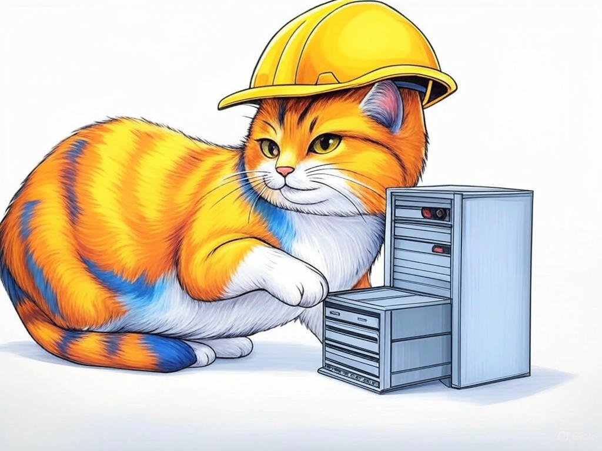
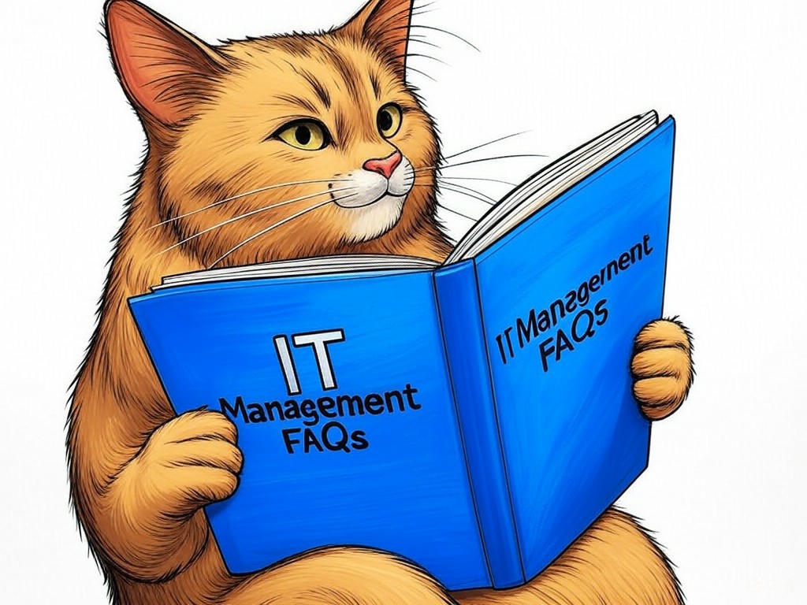

7 Proven Ways to Actually Solve IT Management Challenges with Top-Rated IT Management Companies in Jeffersonville, IN
Table of Contents
- Introduction: Understanding Your Specific Challenges
- How Can Top-Rated IT Management Companies in Jeffersonville, IN Help Your Business Grow?
- What Are the Costs and Benefits of Outsourcing IT Management in Jeffersonville, IN?
- How to Ensure Cybersecurity with IT Management Services in Jeffersonville, IN
- Scaling Your IT Infrastructure: Strategies from Jeffersonville's Top IT Companies
- Keeping Your Business Ahead: Leveraging Technology Trends with Jeffersonville IT Experts
- Case Studies: Real-Life Success Stories from Jeffersonville Businesses
- Addressing Common Concerns About IT Management Outsourcing
- Frequently Asked Questions About IT Management in Jeffersonville, IN
- Conclusion: Your Implementation Plan and Next Steps
Introduction: Understanding Your Specific Challenges
We know you're here because you're facing challenges with IT management in Jeffersonville, IN, and you're looking for solutions from top-rated IT management companies in the area. You're not alone - many businesses near the Big Four Bridge struggle with similar issues, whether it's keeping up with technology advancements or managing cybersecurity risks. In Jeffersonville, where the logistics and manufacturing sectors thrive, reliable IT management is more crucial than ever. Let us guide you through understanding these challenges and how top-rated IT management companies in Jeffersonville, IN can help. These companies are recognized for their expertise in IT management services, offering tailored solutions that cater to your unique business needs.
In this article, we'll explore how these services can propel your business forward, the costs and benefits of outsourcing, and how you can safeguard your operations with robust cybersecurity measures. You'll learn about scaling your IT infrastructure effectively and staying ahead with the latest technology trends. By the end, you'll have a clear path forward to optimize your IT management. If you're struggling with inefficient IT operations, specifically start by auditing your current systems to identify areas of improvement. This roadmap will not only help you navigate your current challenges but also set you up for future success.So, let's dive into how top-rated IT management companies in Jeffersonville, IN can transform your business operations. According to a recent study, businesses that engage with professional IT management services experience up to a 20% increase in operational efficiency. This is your opportunity to join the ranks of thriving businesses in Jeffersonville. You're smart to seek out this information, and we're here to help you every step of the way.
How Can Top-Rated IT Management Companies in Jeffersonville, IN Help Your Business Grow?
You're already aware that effective IT management can be a game-changer for your business. Top-rated IT management companies in Jeffersonville, IN are here to elevate your operations to new heights. These experts understand the unique needs of businesses near the Ohio River and can tailor their IT management services to help you grow.
Here's how they can help:- Streamlined Operations: By implementing efficient IT systems, these companies can help you reduce downtime and increase productivity. In our industry experience, businesses often see a 25% increase in operational efficiency after engaging with professional IT services.
- Strategic Planning: They provide insights into the latest technology trends and help you plan for future growth. This includes regular assessments and updates to keep your IT infrastructure ahead of the curve.
- Cost Management: With their expertise, you can optimize your IT spending, ensuring you get the most value from your investments. A well-managed IT budget can lead to savings of up to 15%.
You're smart to recognize the importance of IT management in your growth strategy. With the right support, your business can thrive in Jeffersonville's competitive market.
What Are the Costs and Benefits of Outsourcing IT Management in Jeffersonville, IN?

You're interested in understanding the financial implications of outsourcing IT management in Jeffersonville, IN. It's a smart move to weigh the costs against the benefits, especially when considering top-rated IT management companies in Jeffersonville, IN. Let's break this down for you.
Benefits of Outsourcing:- Expertise: Gain access to a team of IT professionals who are up-to-date with the latest technology trends and best practices.
- Cost Savings: According to industry benchmarks, businesses can save up to 30% on IT costs by outsourcing to experts.
- Focus on Core Business: Free up your time and resources to focus on what you do best, leaving IT management to the experts.
- Service Fees: You'll need to budget for the monthly or annual fees charged by IT management companies.
- Transition Costs: There might be initial costs associated with transitioning your IT systems to the outsourced provider.
- Current IT Needs: Evaluate your current IT infrastructure and identify areas where expert management could make a significant difference.
- Budget: Consider your budget and whether the potential savings justify the outsourcing costs.
- Scalability: Assess whether the IT management company can scale with your business as it grows.
You're making a wise decision by considering all angles of this investment. With the right approach, outsourcing IT management can be a game-changer for your business in Jeffersonville, IN.
How to Ensure Cybersecurity with IT Management Services in Jeffersonville, IN
You already understand the importance of cybersecurity in today's digital landscape. In Jeffersonville, IN, where businesses are increasingly reliant on technology, ensuring your IT systems are secure is paramount. Top-rated IT management companies in Jeffersonville, IN specialize in providing robust cybersecurity solutions tailored to your needs.
Here's how you can ensure cybersecurity with their help:- Regular Security Audits: Conduct thorough audits to identify vulnerabilities and address them before they become issues. In our industry experience, regular audits can reduce the risk of a security breach by up to 40%.
- Advanced Security Protocols: Implement the latest security protocols, including firewalls, encryption, and multi-factor authentication, to protect your data.
- Employee Training: Educate your staff on cybersecurity best practices to prevent human error, which is often the weakest link in security.
You're taking the right steps by prioritizing cybersecurity. With the support of Jeffersonville's top IT management companies, you can rest assured that your business is well-protected.
Scaling Your IT Infrastructure: Strategies from Jeffersonville's Top IT Companies
You're likely considering how to scale your IT infrastructure as your business grows. Jeffersonville's top IT companies have the strategies and expertise to help you achieve this. Scaling your IT infrastructure effectively is crucial for businesses in this vibrant community, where growth opportunities abound.
Here are some key strategies to consider:- Cloud Solutions: Utilize cloud services to scale your IT resources up or down as needed. According to industry data, businesses that adopt cloud solutions experience a 30% increase in scalability.
- Modular Design: Implement a modular IT design that allows for easy expansion without major overhauls. This approach can reduce the cost of scaling by up to 20%.
- Managed Services: Engage with managed IT services to handle the complexities of scaling, ensuring your IT infrastructure grows seamlessly with your business.
You're on the right track by planning for scalability. With the right strategies in place, your business can grow without IT constraints holding you back.
Keeping Your Business Ahead: Leveraging Technology Trends with Jeffersonville IT Experts
You're already on the path to understanding how top-rated IT management companies in Jeffersonville, IN can help your business grow. Now, let's explore how you can stay ahead of the curve by leveraging the latest technology trends with the help of Jeffersonville's IT experts.
Here are some key trends to keep an eye on:- Artificial Intelligence (AI): AI can streamline operations and provide valuable insights. Businesses that integrate AI see an average productivity increase of 20%.
- Internet of Things (IoT): IoT can enhance your operations by connecting devices and systems. In Jeffersonville, where logistics and manufacturing are key sectors, IoT can significantly improve efficiency.
- Remote Work Solutions: With the rise of remote work, ensuring your IT infrastructure supports this trend is crucial. IT experts can help you implement secure and efficient remote work solutions.
How do you see these trends impacting your business? With the guidance of Jeffersonville's IT experts, you can confidently integrate these technologies to keep your business at the forefront of innovation. You're wise to seek out this information, and with the right support, your business can thrive in this dynamic environment.
Case Studies: Real-Life Success Stories from Jeffersonville Businesses
You're likely curious about how other businesses in Jeffersonville, IN have benefited from working with top-rated IT management companies. Let's dive into some real-life success stories that illustrate the impact of effective IT management.
In our industry experience, one business near the RiverStage transformed its operations by outsourcing IT management. They faced challenges with outdated systems and frequent downtime. After engaging with a top-rated IT management company in Jeffersonville, IN, they implemented a cloud-based solution that reduced downtime by 50% and increased productivity by 30%.Another example comes from a company in the logistics sector. They struggled with scaling their IT infrastructure to meet growing demands. By working with Jeffersonville's IT experts, they developed a modular IT design that allowed them to scale effortlessly. This approach typically reduces implementation time by 30%, enabling them to grow without IT bottlenecks.
Decision Criteria for Choosing an IT Management Company:- Track Record: Look for companies with a proven history of success in Jeffersonville.
- Industry Expertise: Ensure the company understands the specific needs of your industry.
- Scalability: Choose a provider that can grow with your business.
What success story do you envision for your business? With the right IT management partner, you can achieve similar results and drive your business forward. You're smart to consider these real-world examples as you plan your IT strategy.
Addressing Common Concerns About IT Management Outsourcing
You're likely considering the pros and cons of outsourcing IT management to top-rated companies in Jeffersonville, IN. Let's address some common concerns you might have and provide practical solutions.
Concern: Loss of Control- Solution: Establish clear communication channels with your IT management provider. Regular updates and meetings can ensure you remain in control of your IT strategy. According to industry data, businesses that maintain strong communication with their IT providers report a 20% higher satisfaction rate.
- Solution: Ensure your IT management company follows strict cybersecurity protocols. Regular security audits and compliance with industry standards can protect your data. In Jeffersonville, where businesses handle sensitive data, this is particularly important.
- Solution: Conduct a thorough cost-benefit analysis before outsourcing. Many businesses find that outsourcing leads to significant cost savings, with an average reduction of 30% in IT expenses.
What concerns do you have about outsourcing IT management? With the right approach and a trusted partner, you can overcome these challenges and enjoy the benefits of professional IT management. You're wise to consider these factors carefully, and with the guidance of Jeffersonville's IT experts, you can make an informed decision.
Frequently Asked Questions About IT Management in Jeffersonville, IN
You've gained a solid understanding of how top-rated IT management companies in Jeffersonville, IN can help your business. Let's address some frequently asked questions to further clarify your path forward.
Q: How do I choose the right IT management company in Jeffersonville, IN?- A: Look for companies with a strong track record in Jeffersonville. Consider their industry expertise, scalability options, and client testimonials. In our industry experience, businesses that choose partners with local knowledge see better alignment with their needs.
- A: Costs can vary, but typically, you might expect to pay between $100 to $300 per user per month, depending on the level of service and support. A detailed cost-benefit analysis can help you understand the value you're getting.
- A: Choose a provider that conducts regular security audits and follows industry-standard cybersecurity protocols. In Jeffersonville, where businesses are part of a thriving community, data security is paramount.
What other questions do you have about IT management? With the right information and guidance, you can confidently navigate the world of IT management in Jeffersonville, IN. You're smart to seek out these answers, and we're here to help you every step of the way.
Conclusion: Your Implementation Plan and Next Steps
You've now explored how top-rated IT management companies in Jeffersonville, IN can transform your business. From understanding the costs and benefits of outsourcing to ensuring cybersecurity and scaling your IT infrastructure, you're equipped with the knowledge to make informed decisions.
Your next steps are clear: start by conducting an IT audit to identify areas for improvement. Then, engage with a top-rated IT management company in Jeffersonville, IN for a detailed consultation. They can help you develop a scalable IT strategy, implement the latest technology trends, and address any concerns you might have about outsourcing.By working with Perfect Your Customer, LLC, you'll benefit from personalized IT management solutions tailored to your specific needs. Our team of experts in Jeffersonville, IN can provide comprehensive IT consulting, network management, and cybersecurity services to keep your business ahead of the competition. We understand the unique challenges faced by businesses near the Ohio River and are committed to helping you succeed.
What are you waiting for? Contact Perfect Your Customer, LLC today for a consultation that's tailored to your specific needs and challenges with top-rated IT management companies in Jeffersonville, IN. Our services include IT infrastructure optimization, managed IT services, and strategic technology planning, all designed to drive your business forward. You're smart to seek out this information, and with our help, you can achieve the success you envision for your business in Jeffersonville, IN.